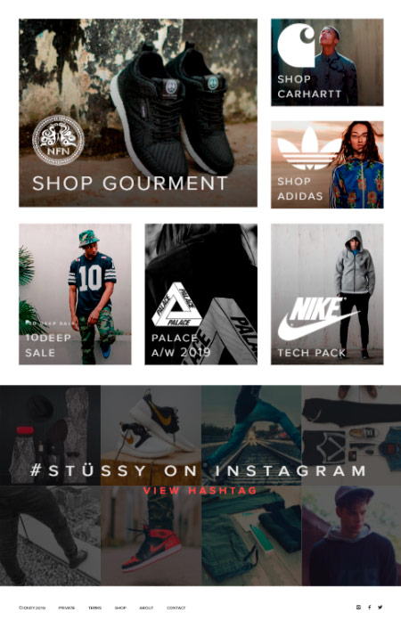
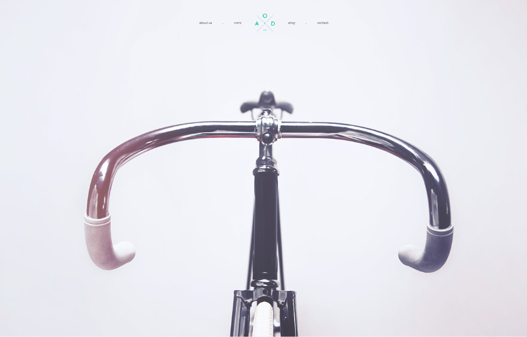
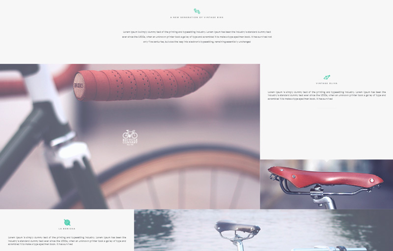
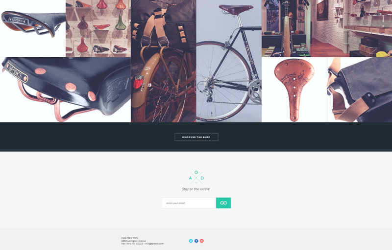
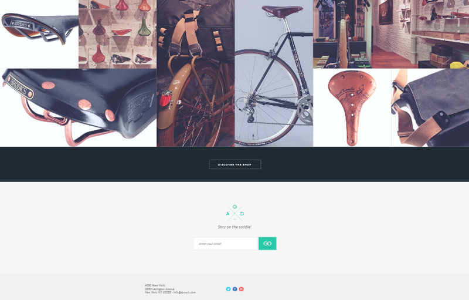
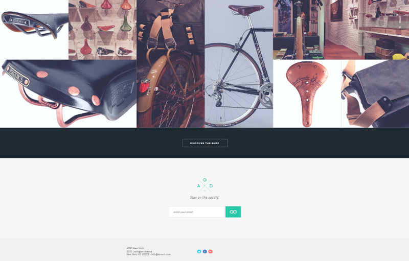
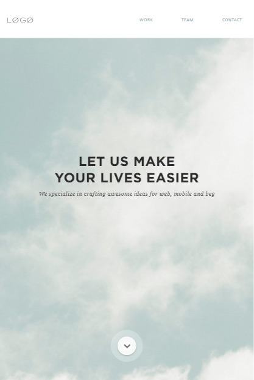
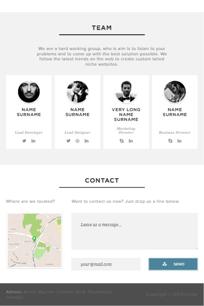
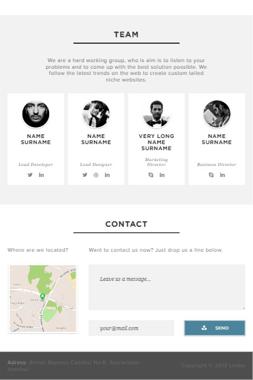

←
Вернуться на главную
Grid Layout

INCDY для Stussy
Эти проекты свёрстаны с технологией Grid Layout
Данная технология ещё слабо поддерживается браузерами (по состоянию на 2019 год)
Плохо работает в IE. Полностью не поддерживается в Opera mini, многими мобильными браузерами, в том числе Safari до 10 версии включительно
 

For AOD New York
При вёрстке я не занималась глубокой минификацией картинок
Все проекты адаптивные, хотя и не планируется их запуск на телефонах

 
By Limbo
Этот проект свёрстан с применением технологий Grid Layout и Flexbox
Фотографии адаптированы и минифицированы, однако за максимальной поддержкой не гналась